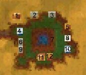

Dragonsand: City Map

| 1. | NPC: +15% experience, takes 7% gold NPC: +6 merchant, takes 2% gold |
| 2. | NPC: +4 all spell skills, takes 20% gold NPC: cast's Town Portal once per day, takes 20% gold |
| 3. | NPC: cast's Water Walk once per day, takes 20% gold NPC: cast's Fly once per day, takes 10% gold |
| 4. | Abdul himself! |
| 5. | Trades Pyramids, or Keg's for Armor |
| 6. | NPC: +20 to all elemental resistances, takes 20% gold NPC: Heals and Cures everything once per day, takes 50% gold |
| 7. | A pedestal for the Place Statues Quest |
| 8. | Trades Pyramids, or Keg's for Weapons |
| 9. | NPC: +4 merchant skill, takes 1% gold NPC: 3 skill to all weapons, takes 4% gold |
| 10. | rades Pyramids, or Keg's for Accessories |
| 11. | +20% all found gold, takes 10% gold NPC: +8 diplomacy, takes 3% gold |
| 12. | Trade Lamps for Gems |
Leave us a message at: mgrounds@hotmail.com